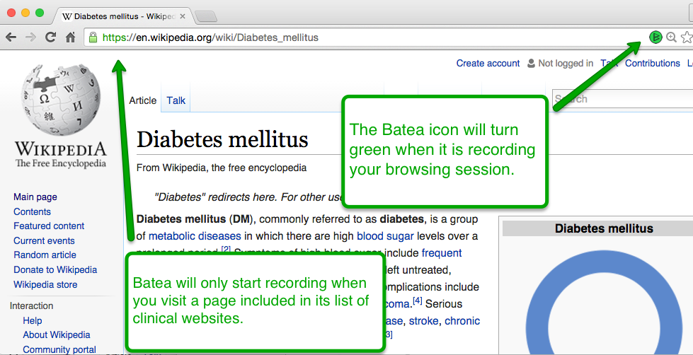
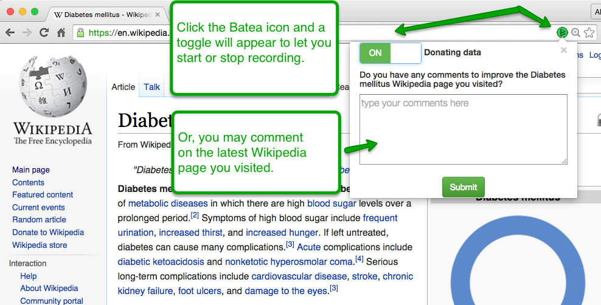
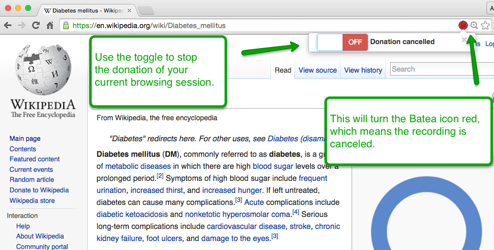

Batea Settings
Batea Settings
Welcome to Batea! Thanks for installing/participating!
Once you leave this page the Batea icon will show up in your search bar and go into a recording-ready state.
How Batea works:
1. Batea makes it simple to comment on Wikipedia articles
The first feature of the Batea Chrome Extension is its Wikipedia Comment Form. You may give feedback on any Wikipedia page (clinical or non-clinical), by selecting text on the page. The Comment Form will appear, prompting you to write your feedback and submit. Your anonymous comments will be sent to the editors of that Wikipedia page.
2. Batea allows you to donate your clinical browsing patterns
The second feature of the extension lets you donate portions of your browsing patterns to the study. Batea will record your browsing session once you visit a clinical site, and ignore other pages you visit. Your browsing data is anonymous, even to us, and is aggregated with the data of other users to further protect your identity.
3. Batea icon turns green when it records a browsing session
Once you visit a site that is on Batea's list of clinical-related websites, the Batea icon will turn green. This indicates that recording has been activated for the current browsing session. One "browsing session" includes the clinical page and the browsing history leading to it, starting with the original search term entered. It also includes visits after the site until you "find" the medical fact you need (meaning you close the window, become inactive, start a new search, etc).
Your browsing data, combined with the data of others, helps researchers learn the strengths and weaknesses of Wikipedia pages. It also helps Wikipedia editors add more useful information to the site.
4. You can easily turn off recording
You can also easily turn off the Batea tracking.
5. Batea turns red when you turn it off
The Batea icon will turn red in order to indicate that it is not recording.
That's it, you are ready to start using Batea
You have completed the installation, and you are now anonymously contributing to Batea. It would help us if you gave us some additional context. You can see Batea in action by visiting the Diabetes Wikipedia page and selecting some text with your mouse!
You can change how Batea functions by using the menu at the top of this page.
- If you would like to participate more fully with Batea, consider becoming a Batea Scholar using "Batea Scholar Participation" above
- You can help us provide more context to your data by adding information to "My Information"
- You can change the settings of Batea under "Settings"
- If you want to be notified of any alerts from the Batea project, click "Alerts"
Settings
Choose which websites trigger Batea to record your browsing sessions.
Comment form Settings
While you are browsing, Batea may ask you about your online research experience. For example, Batea may ask if you found what you were looking for on Wikipedia. You may disable these comment forms below.
We no longer need this section, because you are participating as a Batea Scholar!
My Information
Your answers to the questions below will not be used to specifically identify you.
Are you involved in clinical care? (optional)
Are you recieving clinical care? (optional)
For your privacy we will reset these back to "I prefer not to share" after you leave this page. We will remember it in our secure data set.
Alerts
If you want to receive security notices from the Batea project, please enter your email below.
For your privacy, this email address will be "forgotten" when you leave this page.
We will remember it in our secure data set, but we will not associate it with your browser information.
This allows us to contact everyone who is a Batea user with important Batea notices, but still allows you to donate data anonymously.
You are a Batea Scholar!
Thank you for providing the extra data. It really helps!
You can opt-out of being a Scholar and go back to being an anonymous Batea user. Just click the button below and we will remove your identifiable information from our server. However, if we have already released a (de-identified) dataset for public download, it will be impossible to remove your de-identified browsing data completely.
Batea Scholar Participation
Scholars donate higher quality data to help Batea better categorize browsing and survey information. This optional participation level involves giving Batea your name and other identifying information, and requires an additional consent process. Unless you opt-in to become a Batea Scholar, you will, by default, remain anonymous.
Scholars will:
- be welcome and encouraged to promote their participation
- be able to download and examine their browsing data
- have the opportunity to interact with researchers to improve the project
Becoming a Batea Scholar requires an extensive consent process that will take you about 10 minutes to complete. If that interests you, click "Become a Batea Scholar" below.